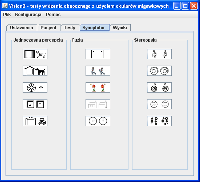

Zakładka "Synoptofor" (rys. 1) podzielona jest na 3 części, w których zgrupowane są przyciski umożliwiające przeprowadzanie odpowiednio testów jednoczesnej percepcji, fuzji lub stereopsji. Uruchomienie konkretnego testu następuje po kliknięciu jednej z ikon symbolizujących poszczególne rodzaje testów. Sterowanie programem w czasie wykonywania testu opisane jest w sekcji Sterowanie testami.
